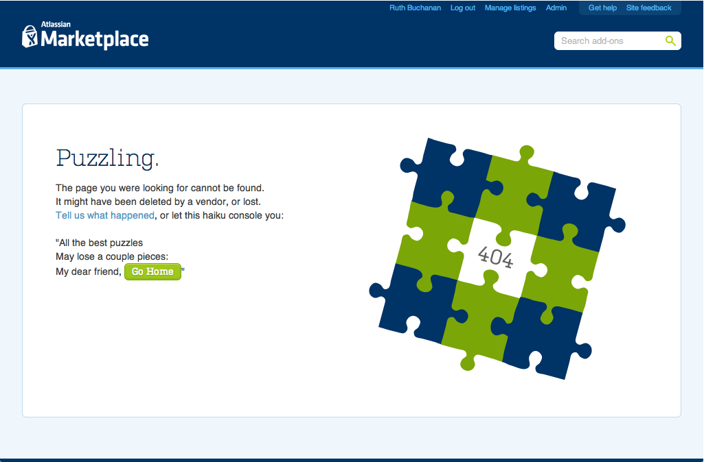
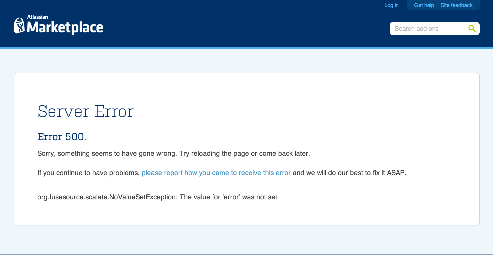
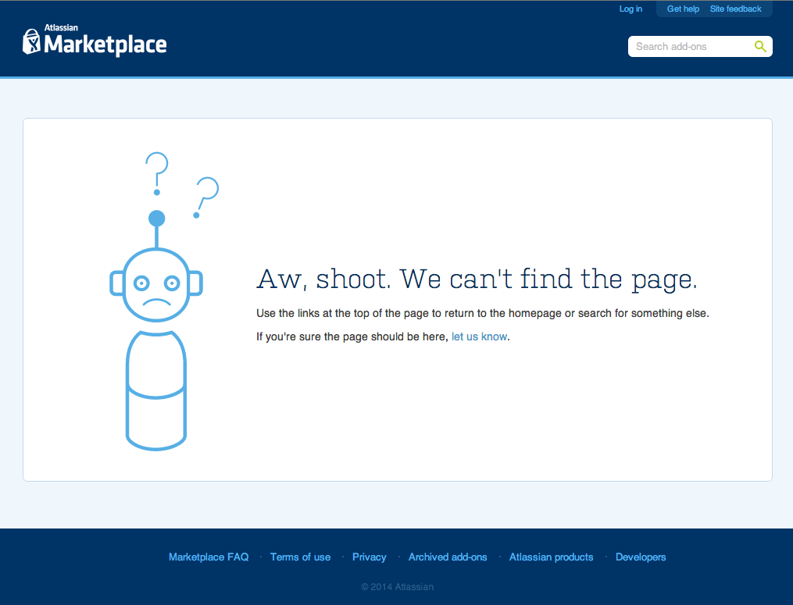
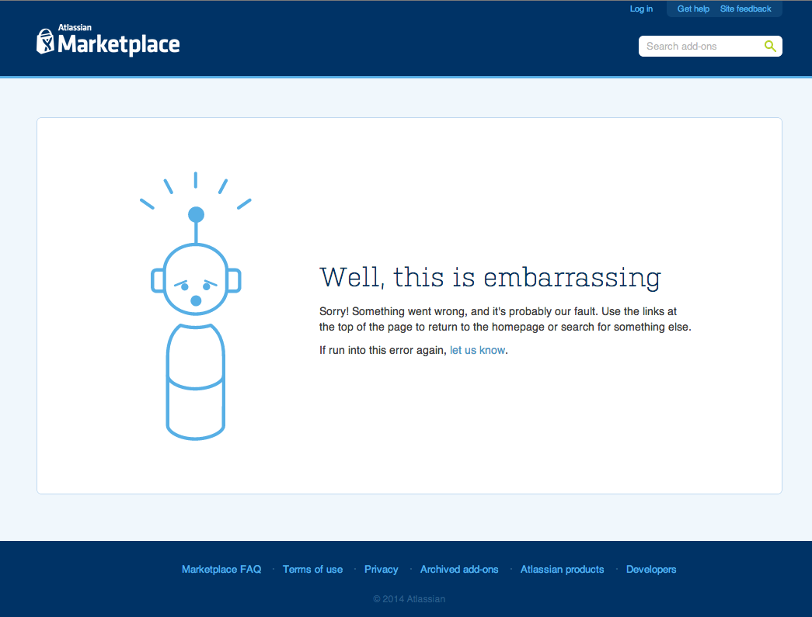

Our error pages provided a poor user experience. When things go wrong, having users decipher a haiku can seem insensitive – an apathetic design can exacerbate. Error pages set the tone for whether users should continue, or give up and throw in the towel. We want to be cheeky but not arrogant or cryptic. Responding with “Puzzling” when was inappropriate.
Old 404

Old 500

The plan
I created a design to align with our marketing site (atlassian.com). I also showcased Atlassian voice and tone, and provided a more empathetic experience.
I also created the visual assets, and riffed on some of our existing “meeple” to make sad and embarrased robots. I followed my team’s development practices. I created a pull request, solicited code review, and merged my changes to master. These pages are live.
New 404

New 500

Lessons learned
If I could do this over again, I’d conduct internal usability tests to assess how people respond to each page version, and ask them what they think the messages mean. This would help see if people find the robots cloying or overly cute.